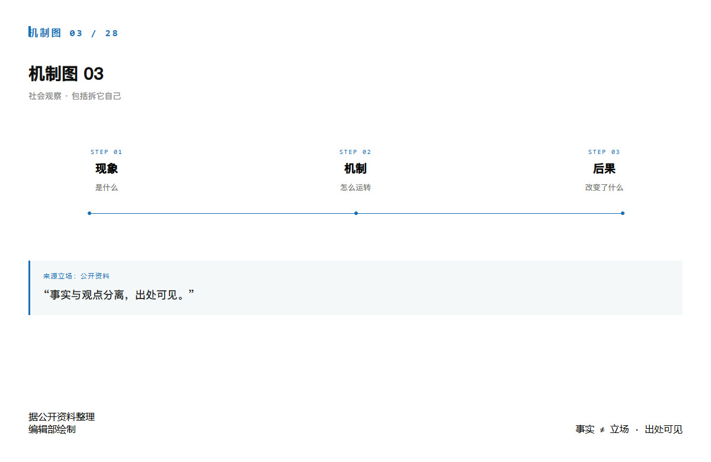

这套方法什么时候不该用
社会观察 · 包括拆它自己
一套工具如果只讲怎么用、不讲什么时候别用，最后一定会变成新的站队工具。
最后专门写禁用条款，其中一条是对这套拆解自己的检验。下面的四条边界加一条自我指涉，来自这套拆解的自我限制，材料是前面那些公开整理和逐字引语。不包装成智慧，也不留余地给你误用。
这和你有关系。你拿这套东西去拆别人之前，先得确认眼前是不是一个该拆的场合。有些场合，拆机制本身就是冷漠。
有人正在被侵害、被围猎、处在危险中时，需要的是报警、求助、声援，不是拆机制。方法论在急救现场是冷漠的别名。先处理伤害，后做观察——顺序不能反。把这两件事调换位置，工具就成了推卸责任的借口。
这条没有例外。哪怕那个场面里确实有叙事机制在运转，哪怕拆完确实能解释很多，也得等人安全了再说。观察可以迟到，救援不能。把顺序弄反，再精致的分析也是事后给自己找的台阶。
这套方法的前提是观察者距离。当事人有权愤怒、有权站队、有权不冷静——要求受害者「客观中立」本身就是一种暴力。当事方可以用它整理材料，记录那一部分对维权极有用，但不欠任何人一个平衡观点。
换句话说，方法对旁观者是纪律，对当事人是可选工具。把观察者的义务强加给当事人，是把方法用反了。谁拿这套东西去要求一个正在难受的人「你先客观一点」，谁就违背了这条边界。
第一步要认位置，第二步要分离事实。材料只有情绪、没有事实时，正确的动作是「不下判断」，不是硬拆。硬拆出来的机制分析，只是另一种精致的站队——它看起来更聪明，实际上同样空。
这一条最难守，因为材料不足的场合往往情绪最足，最想让人说点什么。忍住不说，也是一种输出。把「我不知道」三个字留在纸上，比编一套解释更诚实，也比急着站队更安全。
前面拆过对轰的策略结构，那是解剖，不是配方。把机制分析反向工程成「怎么骂更有效」，是对方法的滥用。解剖是为了看懂，不是为了提高命中率。谁教人用双口径去给己方找话术，谁就把诊断书改成了武器。
这是禁止事项，不是提醒事项。工具和弹药的区别不在材料，在使用方式。同一套双口径，用来让结构显形是工具，用来让某一方赢得更难看是弹药。分界线就在这儿，不接受「我只是分析一下」的辩解。
还有一条：这套拆解自己也在被这套方法检验。它的母命题——男性叙事在公共场域失语——是观察归纳，不是免论证前提。它的引文有综述转述成分，它的立场声明本身也是一种站位。谁用它拆出这套拆解的问题，谁就用对了。
现在你就可以做一件事：把这套拆解双口径并置一下。情绪定性的那条是什么，程序分类的那条是什么，中间空着的裁判席谁来坐。拆得动，说明方法还活着；拆不动，说明它已经变成了教条。
它还报了局限：短视频和 AI 生成内容这类新机制看得不够久，对轰的参与规模、收益分布没有实证数据，那些成本收益表是分析框架，不是统计。把局限写进工具箱，工具才不会假装万能。
📌 一条禁止事项
把机制分析反向工程成「怎么骂更有效」，是滥用。工具在任何时候都不能变成弹药。
编辑部综述 · 方法声明
「方法给读者，限制也给读者。」
禁用条款不是免责声明，是工具能不能被信任的一部分。

▲ 四条边界与一条自我指涉（编辑部绘制）
✍️ 这套方法，你会先用在什么地方？
是拆一条热搜，还是拆自己看完热搜后的第一反应？评论区说说。觉得有用，点个赞、点个「在看」。
到这里就收束了。机器还在转，记录继续。
资料来源
四条边界（正在发生的伤害 / 当事方 / 材料不足 / 优化对轰）为这套拆解的禁用与限制条款，属编辑部归纳。
自我指涉检验、新机制待观察、对轰实证数据缺失，为这套拆解自报的局限；成本收益表为分析框架，非统计。
样本与引文见《2026.11.11 · 28.8 万彩礼谈崩》及既有拆解；连麦为单方陈述，未经另一方证实，态度转变归因不裁决。
社会观察，不站任何性别立场。方法含自我指涉检验，母命题可被质疑；适用边界即禁用条款。拆解是为了理解，不是行动指南。